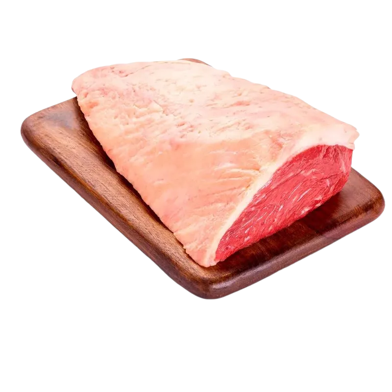

Status de Conformidade
Aprovado e Certificado

Origem: Sorriso, Mato Grosso
Jornada da Terra à Mesa
Origem Verificada
Fazenda Sol Nascente, Sorriso - MT. Proprietário: João Silva.
A propriedade foi cruzada com dados de satélite do INPE (PRODES). Resultado: Nenhuma sobreposição com áreas de desmatamento após 2008, terras indígenas ou unidades de conservação. Emissão do certificado EUDR confirmada via Smart Contract na rede Ethereum.
Manejo e Bem-Estar Animal
Pastagem rotacionada e nutrição balanceada. Registro SISBOV: 129384-MT.
O animal foi monitorado por sensores IoT durante toda a fase de engorda. Histórico de vacinação contra febre aftosa e brucelose validado pelo INDEA-MT e registrado na blockchain no bloco #145892. Garantia de ausência de promotores de crescimento artificiais.
Processamento e Inspeção
Frigorífico Modelo, Rondonópolis - MT. Certificação SIF nº 1234.
Processamento realizado sob rigorosas normas de higiene e bem-estar animal. A carcaça foi classificada como Premium (Grau de Acabamento 4 - Gordura Uniforme). O certificado sanitário digital foi emitido e atrelado ao token NFT do lote, tornando o laudo inalterável.
Logística e Distribuição
Cadeia fria monitorada até o Supermercado Premium.
Sensores de temperatura no caminhão refrigerado registraram dados na blockchain a cada 15 minutos via rede 5G. O Smart Contract validou automaticamente que nenhuma violação da cadeia de frio ocorreu. O produto chegou ao destino final em perfeitas condições de maturação.
Certificação Blockchain
Informações imutáveis registradas em tempo real. A SafraNet garante que os dados acima não foram alterados desde a origem.